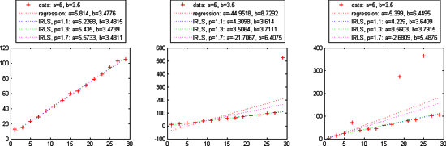

$$qf_commondoc_header.start$$ $$qf_commondoc_header.end$$
Linear Fits (Regression, ...)
$$funcref_start$$
regression(X, Y), regression(X, Y, "parameter", parameterValue) - calculates the linear regression coefficients from the data vectors X and Y :
$$funcref_description$$
The argument X and Y have to be vectors with at least two entries (one needs two datapoints to estimate two parameters of a line!). The function returns the two coefficients of $$math:f(x)=a+b\cdot x$$ as a vector with the entires [a, b].
A special call regression(X, Y, "parameter", parameterValue) allows to fix one of the two parameters a or b:
regression(X, Y, "a", 2) performs a regression with a fixed to 2
regression(X, Y, "b", 0) performs a regression with b fixed to 0
In both cases the return vector is still [a, b]
$$funcref_end$$
$$funcref_start$$
weighted_regression(X, Y, W), weighted_regression(X, Y, W, "parameter", parameterValue) - calculates the linear regression coefficients from the data vectors X and Y. The weights are given in W :
$$funcref_description$$
The argument X, Y and W have to be vectors with at least two entries (one needs two datapoints to estimate two parameters of a line!). The function returns the two coefficients of $$math:f(x)=a+b\cdot x$$ as a vector with the entires [a, b].
A special call weighted_regression(X, Y, W, "parameter", parameterValue) allows to fix one of the two parameters a or b:
weighted_regression(X, Y, W, "a", 2) performs a regression with a fixed to 2
weighted_regression(X, Y, W, "b", 0) performs a regression with b fixed to 0
In both cases the return vector is still [a, b]
$$funcref_end$$
$$funcref_start$$
irls(X, Y), irls(X, Y, "parameter", parameterValue) - calculates the iteratively reweighted regression coefficients from the data vectors X and Y :
$$funcref_description$$
The argument X and Y have to be vectors with at least two entries (one needs two datapoints to estimate two parameters of a line!). The function returns the two coefficients of $$math:f(x)=a+b\cdot x$$ as a vector with the entires [a, b].
A special call irls(X, Y, "parameter", parameterValue) allows to fix one of the two parameters a or b:
irls(X, Y, "a", 2) performs a regression with a fixed to 2
irls(X, Y, "b", 0) performs a regression with b fixed to 0
In both cases the return vector is still [a, b].
It is also possible to change the parameters p (default: 1.1) and number of iterations (default: 100) of the IRLS algorithm:
irls(X, Y, p)
irls(X, Y, p, iterations)
irls(X, Y, p, "a", 2)
irls(X, Y, p, iterations, "a", 2)
Algorithm Description:
This is a simple form of the IRLS algorithm to estimate the parameters a and b in a linear model $$math: f(x)=a+b\cdot x $$.
This algorithm solves the optimization problem for a $$math: L_p$$-norm:
$$bmath:(a^\ast,b^\ast)=\argmin\limits_{a,b}\sum\limits_i|a+b\cdot x_i-y_i|^p$$
by iteratively optimization weights \f$ \vec{w} \f$ and solving a weighted least squares problem in each iteration:
$$bmath:(a_n,b_n)=\argmin\limits_{a,b}\sum\limits_i|a+b\cdot x_i-y_i|^{(p-2)}\cdot|a+b\cdot x_i-y_i|^2$$
The algoruithms works as follows:
- calculate initial $$math: a_0$$ and $$math: b_0$$ with unweighted regression from x and y
- perform a number of iterations (parameter iterations ). In each iteration n:
- calculate the error vector $$math:\vec{e}$$: $$bmath: e_i = a+b\cdot x_i -y_i $$
- estimate new weights $$math:\vec{w}$$: $$bmath: w_i=|e_i|^{(p-2)/2} $$
- calculate new estimates $$math: a_n$$ and $$math: b_n$$ with weighted regression from $$math: \vec{x}$$ and $$math: \vec{y}$$ and $$math: \vec{w}$$
- return the last estimates $$math:a_n$$ and $$math:b_n$$

$$see:C. Sidney Burrus: "Iterative Reweighted Least Squares", http://cnx.org/content/m45285/latest/$$
$$funcref_end$$
Nonlinear Fits (Least Squares, ...)